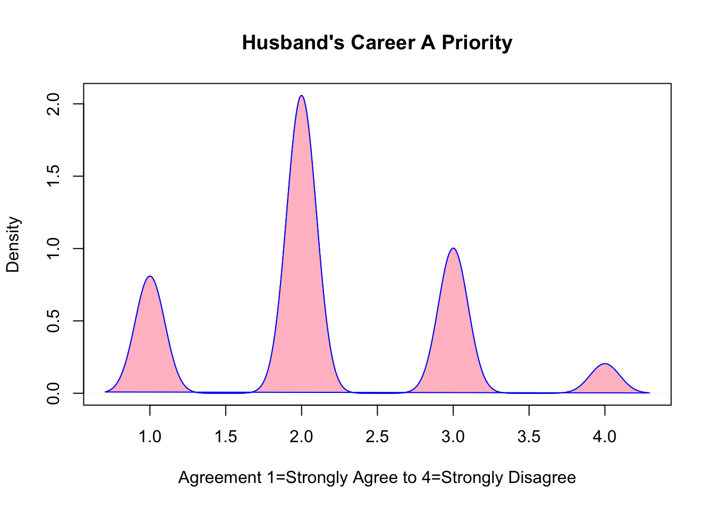
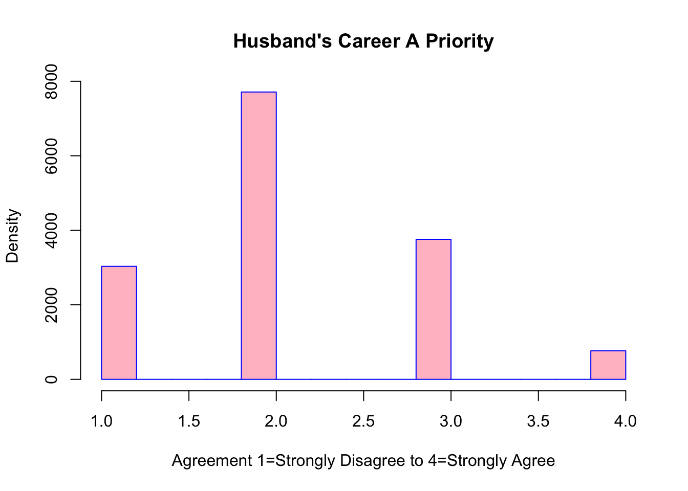
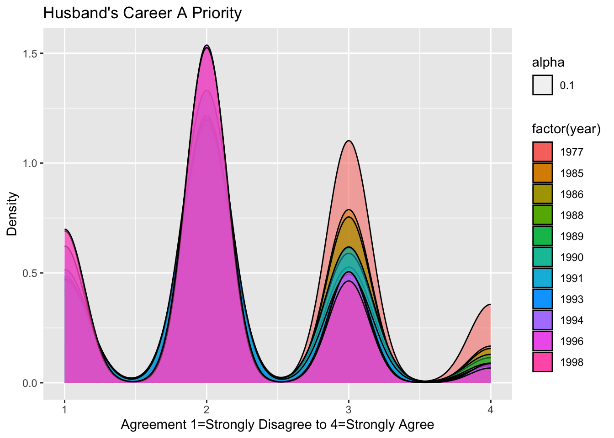
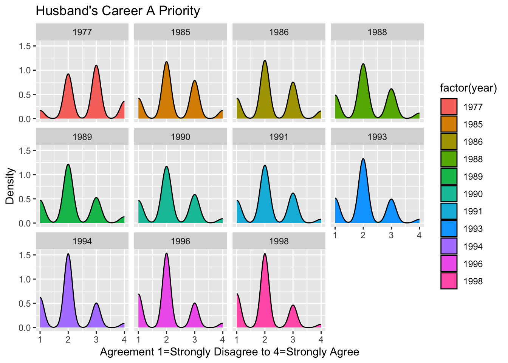
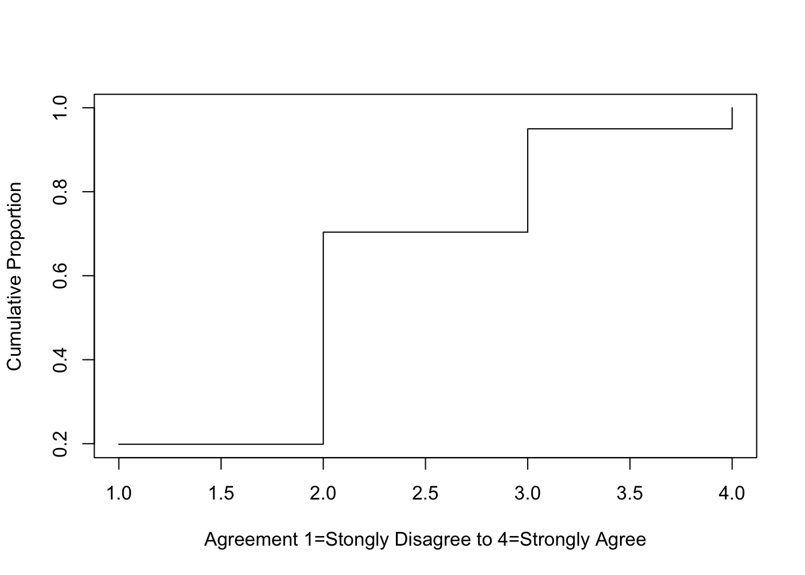
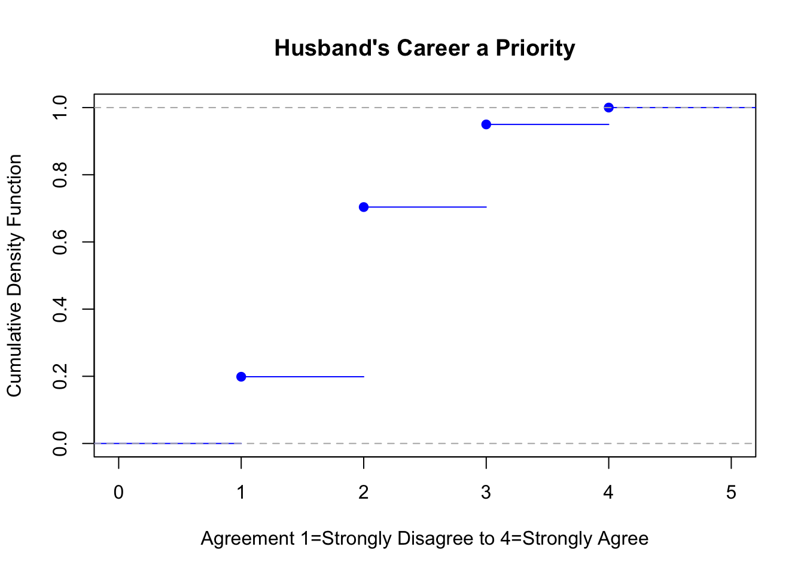
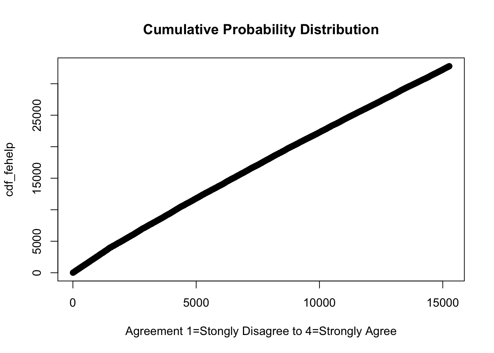
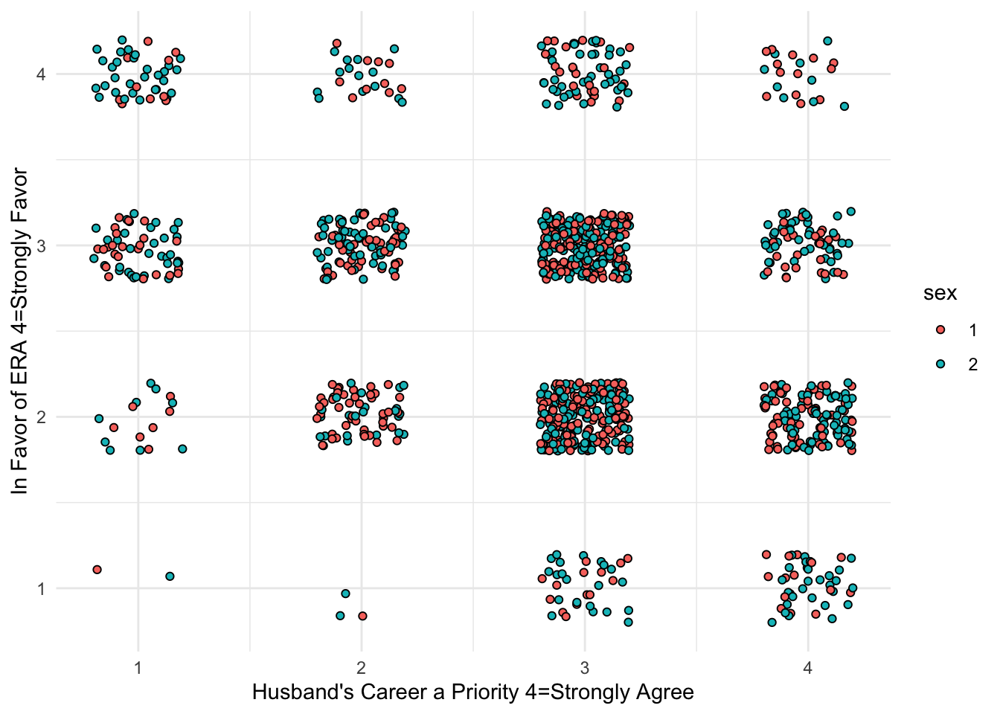
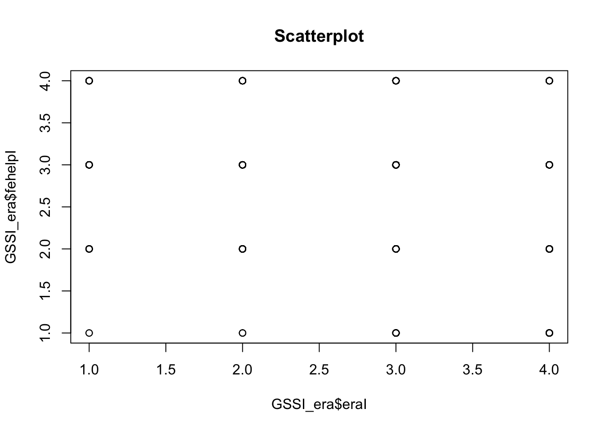

Code
# libraries
library(dplyr)
library(MASS)
library(readxl)
library(tidyverse)
library(ggplot2)
library(stats)
library(readr)
knitr::opts_chunk$set(echo = TRUE)Kopecky
July 18, 2023
This dataset is from the General Social Survey (GSS) which has conducted research from 1972 on American Society. There are 15266 obervations (rows) with 6 variables (columns). The variables are year, age, gender, race, fehelp, and era.
For variable fehelp, repsondents state whether they 1=Strongly Agree to 4 = Strongly Disagree with the statement, “It is more for a wife to help her husband’s career than to have one herself.”
For era, repsondents state whether they 1=Strongly Favor to 4 = Strongly Oppose the Equal Rights Amendment (ERA).
This project will look at the two variables fehelp and year but possibly explore the others. One question to ask is how has the level of agreement for fehelp changed over time.
This seems to be a relevent question today as the Covid-19 pandemic highlighted the stress of balancing family and work. The National Women’s Law Center (2022) states women left the workforce at a disproportionate rate and have not yet recovered. This is a concern because of lost skills, wages, and earning potential. https://nwlc.org/wp-content/uploads/2022/03/FINAL-NWLC-Resilient-But-Not-Recovered-3.29.22.pdf
Additionally, the BBC (2023) reports, “Researchers for Deloitte’s Women @ Work 2023 report surveyed 5,000 women across 10 countries, 98% of whom were in heterosexual relationships. The data found that nearly 40% of respondents say their partner’s career takes precedence. They cited several reasons, ranging from financial and social factors to the burden of caretaking and household responsibilities. https://www.bbc.com/worklife/article/20230620-why-many-women-prioritise-their-partners-jobs
Rows: 15266 Columns: 6
── Column specification ────────────────────────────────────────────────────────
Delimiter: ","
chr (1): era
dbl (5): year, age, sex, race, fehelp
ℹ Use `spec()` to retrieve the full column specification for this data.
ℹ Specify the column types or set `show_col_types = FALSE` to quiet this message.# A tibble: 15,266 × 6
year age sex race fehelp era
<dbl> <dbl> <dbl> <dbl> <dbl> <chr>
1 1977 63 2 1 2 2
2 1977 31 2 1 1 .i
3 1977 66 1 1 1 2
4 1977 26 1 1 4 1
5 1977 20 2 1 3 2
6 1977 36 1 1 3 2
7 1977 77 2 1 2 2
8 1977 35 2 1 1 2
9 1977 85 2 1 3 .d
10 1977 44 2 1 3 2
# … with 15,256 more rows# A tibble: 6 × 6
year age sex race fehelp era
<dbl> <dbl> <dbl> <dbl> <dbl> <chr>
1 1977 63 2 1 2 2
2 1977 31 2 1 1 .i
3 1977 66 1 1 1 2
4 1977 26 1 1 4 1
5 1977 20 2 1 3 2
6 1977 36 1 1 3 2 [1] 15266 6# Mutating *fehelp* to *fehelpI* by reversing the values 1=Strongly Agree through 4=Strongly Disagree to 1=Strongly Disagree through 4=Strongly Agree because it seems more intuitive for graphing.
GSSI <- GSS %>%
mutate(fehelpI = case_when(
fehelp == 1 ~ 4,
fehelp == 2 ~ 3,
fehelp == 3 ~ 2,
fehelp == 4 ~ 1))
head(GSSI)# A tibble: 6 × 7
year age sex race fehelp era fehelpI
<dbl> <dbl> <dbl> <dbl> <dbl> <chr> <dbl>
1 1977 63 2 1 2 2 3
2 1977 31 2 1 1 .i 4
3 1977 66 1 1 1 2 4
4 1977 26 1 1 4 1 1
5 1977 20 2 1 3 2 2
6 1977 36 1 1 3 2 2

# Opinion by Year Overlapping vs Separate Pdf's. This can show how the level of aggreement for *fehelpI* has shifted overtime from 1977 to 1998.
ggplot(GSSI, aes(fehelpI))+
geom_density((aes(fill=factor(year), alpha=0.1)))+
ggtitle("Husband's Career A Priority")+
labs(x = "Agreement 1=Strongly Disagree to 4=Strongly Agree",
y= "Density")

# Cdf's for *fehelpI*, a few perspectives of cdf's for ordinal data.
# Cumulative proportions
ordinal_data <- ordered(GSSI$fehelpI)
cumulative_proportions <- cumsum(table(ordinal_data)) / length(ordinal_data)
plot(cumulative_proportions, type = "s", xlab = "Agreement 1=Stongly Disagree to 4=Strongly Agree", ylab = "Cumulative Proportion")


# Opinion on Husband's Career grouped by year. This table displays the mean, median, standard deviation and confidence intervals for *fehelpI* The mean level of agreement about making the husband's career a priority changed from 3=Agree to 2=Disagree and the standard deviation changed from 0.80 in 1972 to 0.74 in 1996.
GSSI %>% group_by(year) %>%
summarize(mean_fehelpI= mean(fehelpI),
median_fehelpI =median(fehelpI),
sd_fehelpI =sd(fehelpI),
ci_lower_fehelpI= t.test(fehelpI)$conf.int[1],
ci_upper_fehelpI = t.test(fehelpI)$conf.int[2])# A tibble: 11 × 6
year mean_fehelpI median_fehelpI sd_fehelpI ci_lower_fehelpI ci_upper_fehe…¹
<dbl> <dbl> <dbl> <dbl> <dbl> <dbl>
1 1977 2.65 3 0.801 2.60 2.69
2 1985 2.28 2 0.812 2.23 2.32
3 1986 2.25 2 0.804 2.21 2.30
4 1988 2.15 2 0.800 2.10 2.20
5 1989 2.13 2 0.793 2.08 2.18
6 1990 2.13 2 0.771 2.08 2.18
7 1991 2.13 2 0.760 2.08 2.18
8 1993 2.05 2 0.736 2.01 2.10
9 1994 2.02 2 0.733 1.99 2.05
10 1996 2.00 2 0.741 1.97 2.03
11 1998 1.96 2 0.720 1.93 2.00
# … with abbreviated variable name ¹ci_upper_fehelpI
1 2 3 4
1977 97 530 633 205
1985 241 676 453 96
1986 238 678 425 88
1988 199 466 253 47
1989 194 499 216 53
1990 182 457 230 35
1991 199 504 261 33
1993 222 574 213 33
1994 431 1055 350 59
1996 573 1275 419 73
1998 457 997 303 44
1 2 3 4
1977 0.64 3.47 4.15 1.34
1985 1.58 4.43 2.97 0.63
1986 1.56 4.44 2.78 0.58
1988 1.30 3.05 1.66 0.31
1989 1.27 3.27 1.41 0.35
1990 1.19 2.99 1.51 0.23
1991 1.30 3.30 1.71 0.22
1993 1.45 3.76 1.40 0.22
1994 2.82 6.91 2.29 0.39
1996 3.75 8.35 2.74 0.48
1998 2.99 6.53 1.98 0.29# Changing from numeric to character data
GSSI$sex <- as.character(GSSI$sex)
# Removing rows with non-numerical cell values for era variable. And reversing the values 1=Strongly Favor - 4=Strongly Oppose to 1=Strongly Oppose - 4=Strongly Favor because it seems more intuitive for graphing. This was only collected in 1972.
GSSI_era <- GSSI[!(is.na(GSSI$era) | GSSI$era==".i"| GSSI$era==".d" | GSSI$era==".n"), ]
unique(GSSI_era$era)[1] "2" "1" "3" "4"# A tibble: 6 × 8
year age sex race fehelp era fehelpI eraI
<dbl> <dbl> <chr> <dbl> <dbl> <fct> <dbl> <dbl>
1 1977 63 2 1 2 2 3 3
2 1977 66 1 1 1 2 4 3
3 1977 26 1 1 4 1 1 4
4 1977 20 2 1 3 2 2 3
5 1977 36 1 1 3 2 2 3
6 1977 77 2 1 2 2 3 3tibble [1,156 × 8] (S3: tbl_df/tbl/data.frame)
$ year : num [1:1156] 1977 1977 1977 1977 1977 ...
$ age : num [1:1156] 63 66 26 20 36 77 35 44 30 36 ...
$ sex : chr [1:1156] "2" "1" "1" "2" ...
$ race : num [1:1156] 1 1 1 1 1 1 1 1 1 1 ...
$ fehelp : num [1:1156] 2 1 4 3 3 2 1 3 1 3 ...
$ era : Factor w/ 4 levels "1","2","3","4": 2 2 1 2 2 2 2 2 1 1 ...
$ fehelpI: num [1:1156] 3 4 1 2 2 3 4 2 4 2 ...
$ eraI : num [1:1156] 3 3 4 3 3 3 3 3 4 4 ...[1] 1156 8# *era* is the dependent variable and *fehelpI* is the independent variable. The position_jitter function was used to visualize the overlapping points.
GSSI_era %>% ggplot(aes(eraI, fehelpI, fill = sex))+
geom_point(shape = 21, size = 1.5, position = position_jitter(width = 0.2, height = 0.2)) +
labs(x = "Husband's Career a Priority 4=Strongly Agree", y = "In Favor of ERA 4=Strongly Favor") +
theme_minimal()

Error in abline(eraxfehelpI): object 'eraxfehelpI' not found
Call:
lm(formula = GSSI_era$eraI ~ GSSI_era$fehelpI)
Residuals:
Min 1Q Median 3Q Max
-2.3939 -0.4030 0.2667 0.5970 1.5970
Coefficients:
Estimate Std. Error t value Pr(>|t|)
(Intercept) 3.72424 0.08387 44.41 <2e-16 ***
GSSI_era$fehelpI -0.33031 0.03072 -10.75 <2e-16 ***
---
Signif. codes: 0 '***' 0.001 '**' 0.01 '*' 0.05 '.' 0.1 ' ' 1
Residual standard error: 0.8387 on 1154 degrees of freedom
Multiple R-squared: 0.09104, Adjusted R-squared: 0.09025
F-statistic: 115.6 on 1 and 1154 DF, p-value: < 2.2e-16 (Intercept) GSSI_era$fehelpI
3.7242365 -0.3303108 [1] -0.3017318[1] 0.09104207---
title: "603 Class Project 1"
author: "Kopecky"
desription: "General Social Survey"
date: "07/18/2023"
format:
html:
toc: true
code-fold: true
code-copy: true
code-tools: true
categories:
- Final Project
- Kopecky
---
```{r}
#| label: setup
#| warning: false
# libraries
library(dplyr)
library(MASS)
library(readxl)
library(tidyverse)
library(ggplot2)
library(stats)
library(readr)
knitr::opts_chunk$set(echo = TRUE)
```
## 1 Import Data and Descriptive Analysis
This dataset is from the General Social Survey (GSS) which has conducted research from 1972 on American Society. There are 15266 obervations (rows) with 6 variables (columns). The variables are *year*, *age*, *gender*, *race*, *fehelp*, and *era*.
For variable *fehelp*, repsondents state whether they 1=Strongly Agree to 4 = Strongly Disagree with the statement, "It is more for a wife to help her husband's career than to have one herself."
For *era*, repsondents state whether they 1=Strongly Favor to 4 = Strongly Oppose the Equal Rights Amendment (ERA).
This project will look at the two variables *fehelp* and *year* but possibly explore the others. One question to ask is how has the level of agreement for *fehelp* changed over time.
This seems to be a relevent question today as the Covid-19 pandemic highlighted the stress of balancing family and work. The National Women's Law Center (2022) states women left the workforce at a disproportionate rate and have not yet recovered. This is a concern because of lost skills, wages, and earning potential. https://nwlc.org/wp-content/uploads/2022/03/FINAL-NWLC-Resilient-But-Not-Recovered-3.29.22.pdf
Additionally, the BBC (2023) reports, "Researchers for Deloitte’s Women @ Work 2023 report surveyed 5,000 women across 10 countries, 98% of whom were in heterosexual relationships. The data found that nearly 40% of respondents say their partner’s career takes precedence. They cited several reasons, ranging from financial and social factors to the burden of caretaking and household responsibilities. https://www.bbc.com/worklife/article/20230620-why-many-women-prioritise-their-partners-jobs
```{r}
GSS <- read_csv("Nanci_datafolder/GSS.csv")
GSS
head(GSS)
dim(GSS)
```
```{r}
# Mutating *fehelp* to *fehelpI* by reversing the values 1=Strongly Agree through 4=Strongly Disagree to 1=Strongly Disagree through 4=Strongly Agree because it seems more intuitive for graphing.
GSSI <- GSS %>%
mutate(fehelpI = case_when(
fehelp == 1 ~ 4,
fehelp == 2 ~ 3,
fehelp == 3 ~ 2,
fehelp == 4 ~ 1))
head(GSSI)
```
## 1i Density Functions
```{r}
# Opinion on Husband's Career Pdf vs. Histogram
probability <- density(GSSI$fehelpI)
plot(probability, main = "Husband's Career A Priority", xlab = "Agreement 1=Strongly Agree to 4=Strongly Disagree",
ylab = "Density")
polygon(probability, col = "pink", border = "blue")
hist(GSSI$fehelpI, main = "Husband's Career A Priority", xlab = "Agreement 1=Strongly Disagree to 4=Strongly Agree",
ylab = "Density", col = "pink", border = "blue")
```
```{r}
# Opinion by Year Overlapping vs Separate Pdf's. This can show how the level of aggreement for *fehelpI* has shifted overtime from 1977 to 1998.
ggplot(GSSI, aes(fehelpI))+
geom_density((aes(fill=factor(year), alpha=0.1)))+
ggtitle("Husband's Career A Priority")+
labs(x = "Agreement 1=Strongly Disagree to 4=Strongly Agree",
y= "Density")
ggplot(GSSI, aes(fehelpI))+
geom_density(aes(fill=factor(year))) +
ggtitle("Husband's Career A Priority")+
labs(x = "Agreement 1=Strongly Disagree to 4=Strongly Agree",
y= "Density")+
facet_wrap(~ year, ncol = 4)
```
```{r}
# Cdf's for *fehelpI*, a few perspectives of cdf's for ordinal data.
# Cumulative proportions
ordinal_data <- ordered(GSSI$fehelpI)
cumulative_proportions <- cumsum(table(ordinal_data)) / length(ordinal_data)
plot(cumulative_proportions, type = "s", xlab = "Agreement 1=Stongly Disagree to 4=Strongly Agree", ylab = "Cumulative Proportion")
# Empirical cumulative distribution
cdf <- ecdf(GSSI$fehelpI)
plot(cdf,
col ="blue",
main = "Husband's Career a Priority",
xlab = "Agreement 1=Strongly Disagree to 4=Strongly Agree",
ylab = "Cumulative Density Function")
# Textbook reference using the function cumsum
cdf_fehelp <- cumsum(GSSI$fehelpI)
plot(cdf_fehelp,
xlab = "Agreement 1=Stongly Disagree to 4=Strongly Agree",
main = "Cumulative Probability Distribution")
```
## 1ii-iv Descriptive Statistics
```{r}
# Opinion on Husband's Career grouped by year. This table displays the mean, median, standard deviation and confidence intervals for *fehelpI* The mean level of agreement about making the husband's career a priority changed from 3=Agree to 2=Disagree and the standard deviation changed from 0.80 in 1972 to 0.74 in 1996.
GSSI %>% group_by(year) %>%
summarize(mean_fehelpI= mean(fehelpI),
median_fehelpI =median(fehelpI),
sd_fehelpI =sd(fehelpI),
ci_lower_fehelpI= t.test(fehelpI)$conf.int[1],
ci_upper_fehelpI = t.test(fehelpI)$conf.int[2])
```
## Descriptive Statistics continued
```{r}
# Frequency and proportion tables of level of aggreement for *fehelpI* grouped by year
table(GSSI$year, GSSI$fehelpI)
prop.table(table(GSSI$year, GSSI$fehelpI)) %>% {.*100} %>% round(2)
```
## Tidy data for scatterplot and linear regression
```{r}
# Changing from numeric to character data
GSSI$sex <- as.character(GSSI$sex)
# Removing rows with non-numerical cell values for era variable. And reversing the values 1=Strongly Favor - 4=Strongly Oppose to 1=Strongly Oppose - 4=Strongly Favor because it seems more intuitive for graphing. This was only collected in 1972.
GSSI_era <- GSSI[!(is.na(GSSI$era) | GSSI$era==".i"| GSSI$era==".d" | GSSI$era==".n"), ]
unique(GSSI_era$era)
GSSI_era$era <- as.factor(GSSI_era$era)
GSSI_era <- GSSI_era %>%
mutate(eraI = case_when(
era == 1 ~ 4,
era == 2 ~ 3,
era == 3 ~ 2,
era == 4 ~ 1))
head(GSSI_era)
str(GSSI_era)
dim(GSSI_era)
```
## 1v. Scatterplot
```{r}
# *era* is the dependent variable and *fehelpI* is the independent variable. The position_jitter function was used to visualize the overlapping points.
GSSI_era %>% ggplot(aes(eraI, fehelpI, fill = sex))+
geom_point(shape = 21, size = 1.5, position = position_jitter(width = 0.2, height = 0.2)) +
labs(x = "Husband's Career a Priority 4=Strongly Agree", y = "In Favor of ERA 4=Strongly Favor") +
theme_minimal()
# Basic scatterplot with abline
plot(GSSI_era$eraI,GSSI_era$fehelpI,main="Scatterplot")
abline(eraxfehelpI)
```
## 2 Linear Regression
```{r}
eraxfehelpI <- lm(GSSI_era$eraI~GSSI_era$fehelpI)
summary(eraxfehelpI)
r_correlation_coef <- cor(GSSI_era$fehelpI, GSSI_era$eraI)
r2_coef_of_determination <- r_correlation_coef^2
eraxfehelpI$coefficients
print(r_correlation_coef) # r=-0.30 represents a negative and weak association between the variables
print(r2_coef_of_determination) # r^2=0.09 also shows a weak relationship between the variables such that only about 9% of the variation in *eraI* is determined by the variation in *fehelpI*
```